PROOF METRICS
반응을 만든 기간과 결과
WHAT I REPEAT
콘텐츠를 만들고 끝내지 않습니다
반응을 찾고, 플랫폼의 언어로 만들고, 행동으로 연결한 뒤 다시 쓸 수 있는 운영 방식으로 남깁니다.
신호를 읽습니다
트렌드, 댓글, 조회 흐름, 팬덤의 감정과 사용자가 멈추는 순간을 관찰합니다.
플랫폼의 언어로 번역합니다
같은 소재도 영상, 이미지, 짧은 문장처럼 각 플랫폼의 소비 문법에 맞게 바꿉니다.
행동까지 설계합니다
조회와 팔로워를 문의, 예약, 매출, 협업 등 다음 행동으로 연결합니다.
반복 가능한 구조로 남깁니다
성과가 나온 방식은 리포트, 템플릿, 콘텐츠 캘린더와 AI 워크플로로 정리합니다.
CORE CASES
신호에서 사업 결과까지
가장 강한 성과만 나열하지 않고, 어떤 판단과 실행이 결과를 만들었는지 같은 구조로 정리했습니다.
CASE 01 · OWNED MEDIA 2019.05–2025.04 · 6년
우피터 — 자체 미디어 브랜드의 공식 채널을 성장·수익화
우피터는 독립된 브랜드명, 축구 팬 타깃, 반복 포맷과 톤앤매너를 가진 자체 미디어 브랜드입니다. 공식 YouTube 채널의 전략부터 제작·발행·커뮤니티·성과 분석까지 전 과정을 직접 운영했습니다.
10만+YouTube 구독자
1억 회+누적 YouTube 조회
5.2억 원5년 누적 콘텐츠 수익
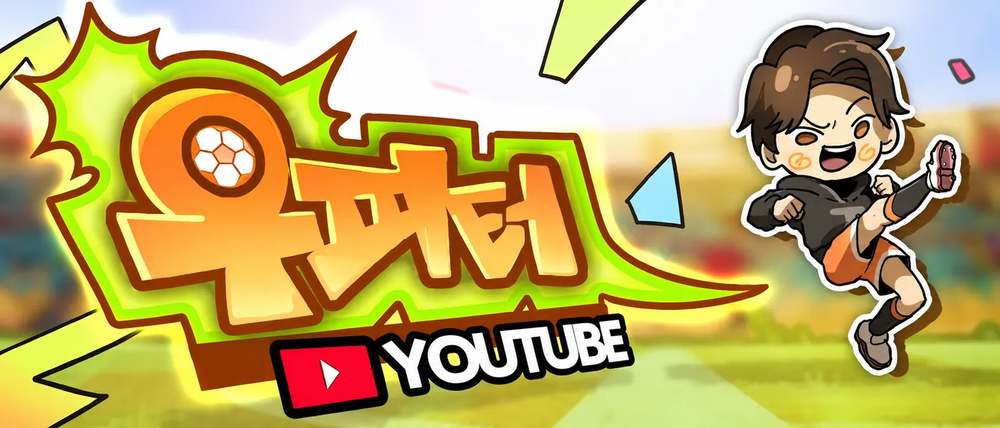
PROBLEM / GOAL
뉴스를 요약하는 채널이 아니라, 팬이 다음 편을 기다리는 축구 콘텐츠 브랜드를 만드는 것이 목표였습니다.
AUDIENCE INSIGHT
팬은 정보 자체보다 자국 선수와 팀에 감정을 이입하며, 그 감정을 다른 팬과 확인할 때 더 오래 머문다고 판단했습니다.
STRATEGY & EXECUTION
국가대표와 손흥민이라는 관심 변수를 중심으로 제목·썸네일·서사 포맷을 설계했습니다. 기획, 촬영, 편집, 발행, 커뮤니티 관리와 데이터 분석을 직접 수행했습니다.
BUSINESS IMPACT
채널을 10만 구독자와 누적 1억 회 이상으로 성장시키고, 5년 누적 콘텐츠 수익 5.2억 원과 브랜드 협업으로 연결했습니다.
REUSABLE LEARNING
브랜드가 말하고 싶은 메시지를 팬덤이 이미 쓰는 감정 언어로 번역하면, 콘텐츠가 일회성 도달이 아니라 채널 자산으로 축적됩니다.
EVIDENCE
YouTube 채널 화면, 대표 콘텐츠 조회, CH.DIA 파트너 활동 자료를 함께 제시합니다. 스포츠 크리에이터 국내 종합지표 6위, Silver Creator Award 기록이 있습니다.
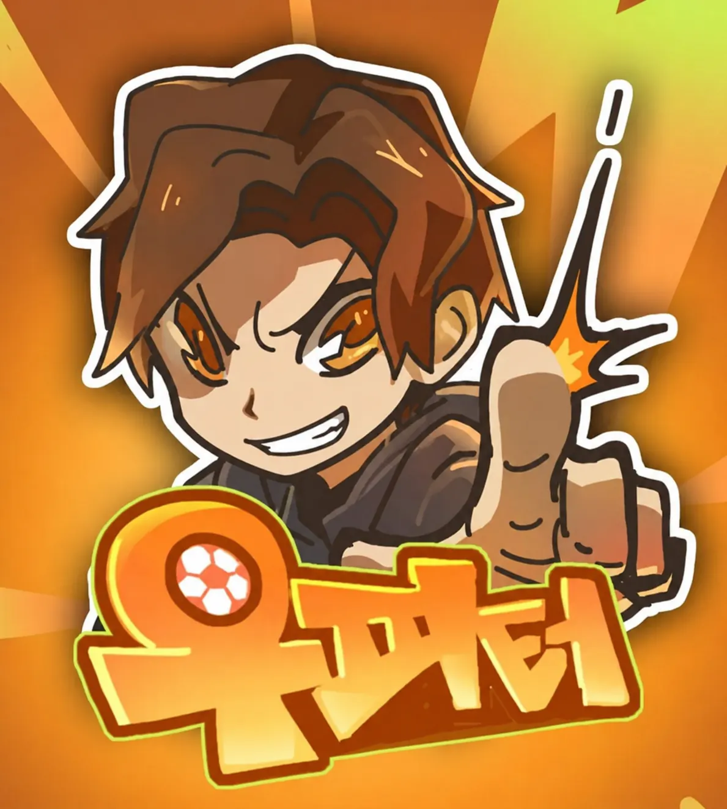
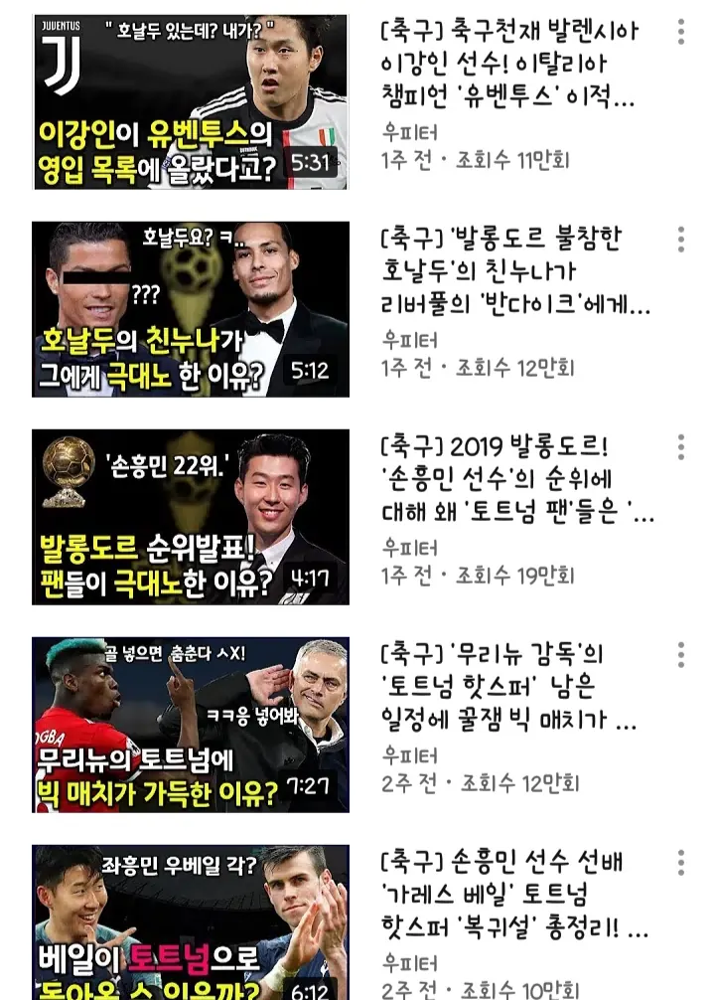
CASE 02 · SOCIAL TO BUSINESS Instagram Reels
냥정주 — 숏폼의 관심을 실제 예약과 매출로 전환
펜션 사유지에서 살아가는 산고양이와 특수한 상황에서 생기는 호기심을 시리즈로 만들었습니다. 콘텐츠 속 장소에 대한 관심을 숙박 경험과 연결해 시청자의 행동을 예약까지 확장했습니다.
664만 회단일 Reels 최고 조회
약 2.2만약 3주간 팔로워 성장
234팀 · 1.2억예약 고객 · 누적 예약 매출
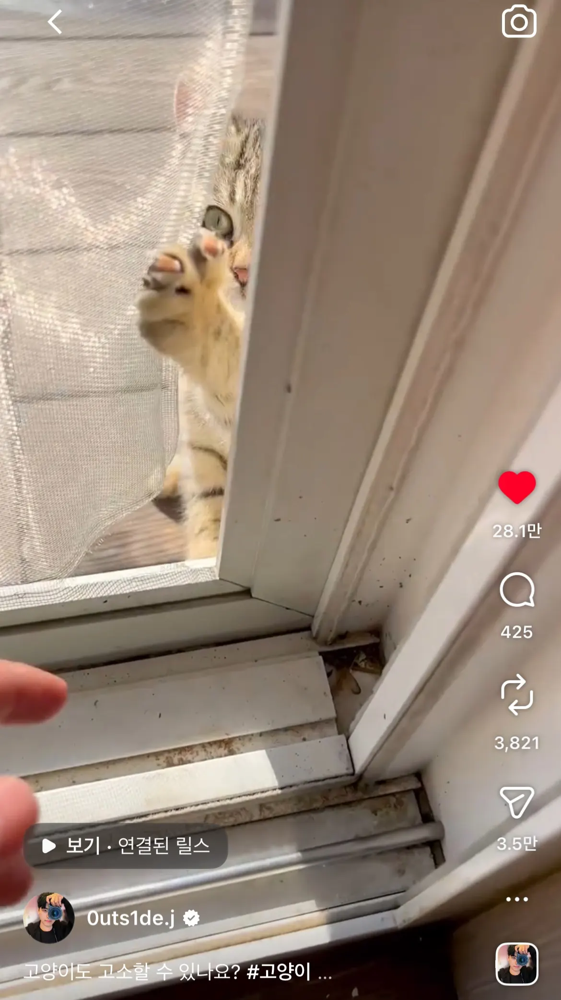
PROBLEM / GOAL
반려동물의 귀여움만 소비하는 단발성 영상이 아니라, 다음 상황을 기다리게 하는 캐릭터와 장소의 관계를 만들고자 했습니다.
AUDIENCE INSIGHT
익숙한 고양이와 낯선 산속 생활이 만날 때 “왜 저기에 있지?”라는 호기심이 생기고, 실제 생활의 연속성이 신뢰를 만든다고 봤습니다.
STRATEGY & EXECUTION
첫 장면에서 사건을 제시하고 결론을 늦추는 포맷으로 시리즈화했습니다. 기획, 촬영, 편집, 카피, 발행, 댓글 반응과 조회 흐름 분석을 직접 수행했습니다.
BUSINESS IMPACT
약 3주 만에 팔로워 약 2.2만 명을 만들고, 콘텐츠가 촬영된 펜션의 예약 234팀과 누적 예약 매출 1.2억 원으로 관심을 전환했습니다.
REUSABLE LEARNING
사람이 좋아한 대상과 실제 이용 경험 사이에 자연스러운 이유가 있을 때, 콘텐츠 신뢰는 문의와 예약 같은 다음 행동으로 이어집니다.
EVIDENCE
Instagram 프로필, 대표 Reels 화면, Google Forms 예약 데이터 234팀 화면을 성과 근거로 연결했습니다.
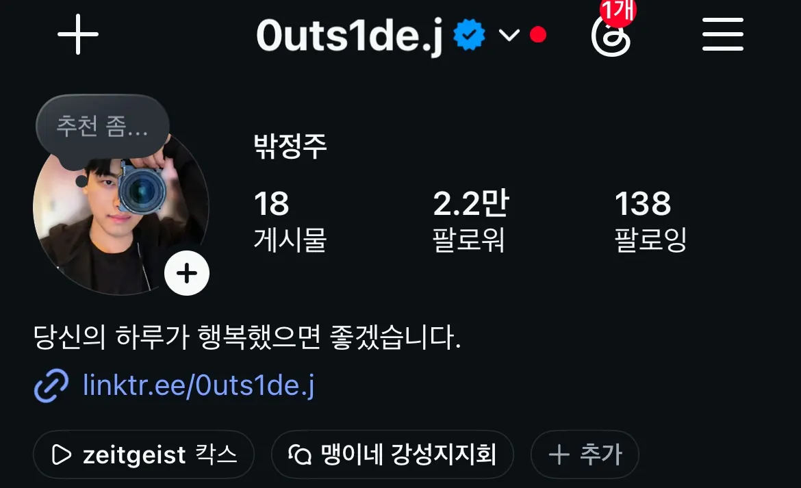
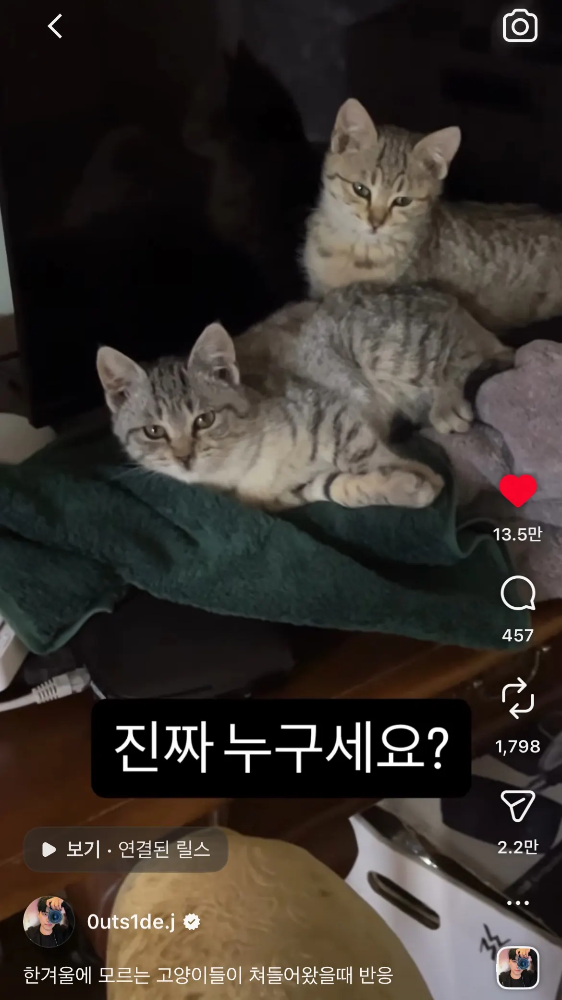
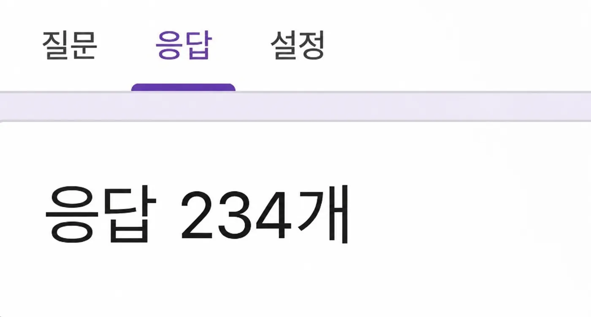
CASE 03 · BRAND COLLABORATION EA SPORTS FIFA 22
FIFA 22 X WPT — 팬덤의 언어로 브랜드 메시지를 번역
제품 기능을 별도 광고물처럼 설명하지 않고, 축구 팬이 익숙하게 소비하던 우피터의 서사 안에 배치했습니다. 광고주 브리프와 채널 톤앤매너 사이의 균형을 기획부터 납품까지 조율했습니다.
500만 원단일 브랜드 협업 계약
A–Z브리프 해석부터 최종 납품
팬덤 문법브랜드 메시지의 콘텐츠화
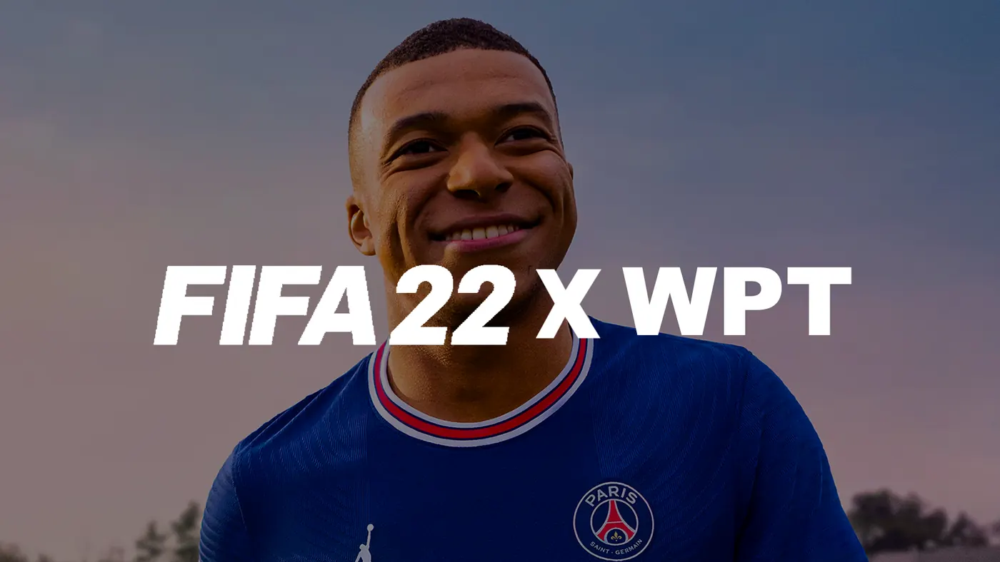
PROBLEM / GOAL
FIFA 22의 기능과 손흥민 선수라는 메시지를 시청 흐름을 깨지 않으면서 전달해야 했습니다.
STRATEGY & EXECUTION
경기 장면, 팬의 관심 인물, 제품의 비주얼 문법을 기존 축구 콘텐츠 안에 배치하고 광고 구간을 이야기의 일부로 구성했습니다.
BUSINESS IMPACT
브랜드 브리프를 채널 이용자가 소비할 수 있는 콘텐츠로 전환해 500만 원 규모의 유료 협업을 완료했습니다.
REUSABLE LEARNING
브랜드의 핵심 메시지와 커뮤니티의 언어가 만나는 지점을 찾으면 노출과 시청 경험을 함께 지킬 수 있습니다.
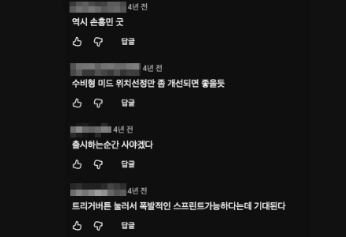
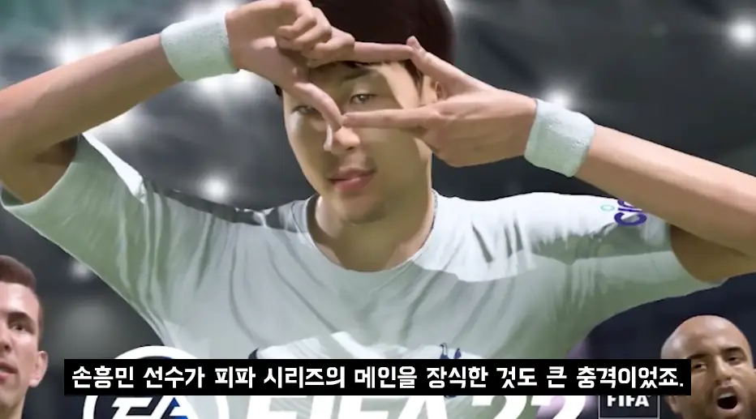
CASE 04 · AI-ASSISTED RESEARCH PAUSED — DATA/API COST
Viral Radar — 초기 확산 신호를 찾는 트렌드 탐색 프로토타입
이미 뜬 결과가 아니라 마케터가 참고할 만큼 이른 신호를 찾기 위해, 후보 콘텐츠를 공통 구조로 모으고 속도·가속도·계정 기준선 대비 성과를 비교하도록 구현했습니다.
후보 수집 → 반복 스냅샷 → 정량 신호 선별 → LLM이 훅·포맷·확산 이유 해석 → 사람이 원본과 근거 확인
검증 범위 · 외부 접속 가능한 프로토타입 구현 / 다수 플랫폼 상시 수집은 데이터·API 비용으로 운영 보류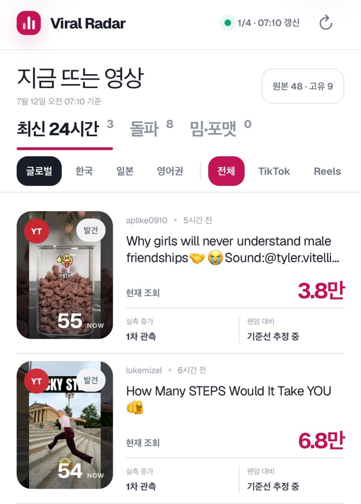
CASE 05 · TEAM OPERATING SYSTEM 1개월 단기 임시 역할
북적북적 — 개인의 채널 운영 경험을 팀의 공식 SNS 기준으로 전환
정식 팀장 채용 전 1개월간 단기 임시 마케팅팀장으로 레이크힐 호텔과 킹랩73의 SNS 운영 기준과 업무 구조를 구축하고 후임 팀장에게 인계했습니다.
채널 톤·소재 기준 → 역할·일정·승인 포인트 → 제작·발행 흐름 → 성과 리포트 → 후임 인계
운영 의미 · 게시물 수보다 다음 담당자가 이어갈 수 있는 기준과 문서를 남긴 단기 조직 경험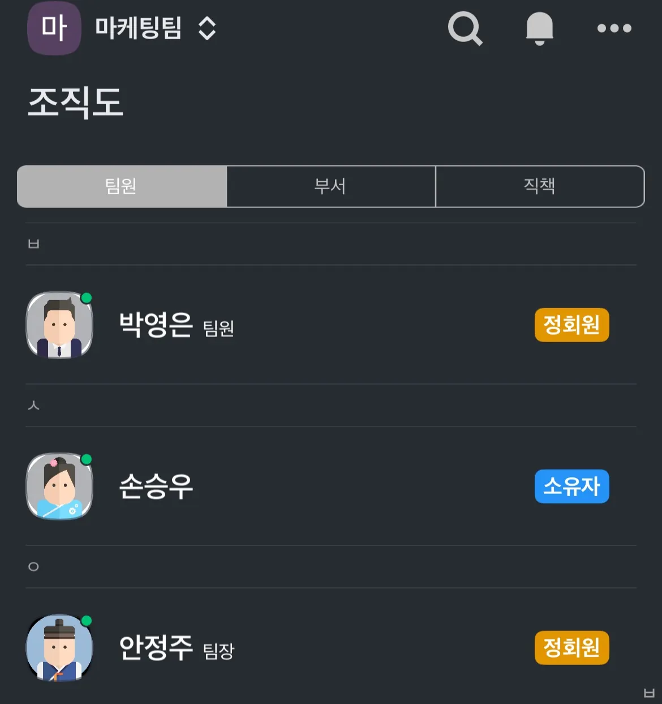
CONTENT TO BUSINESS
도달을 수익과 고객 행동으로 연결했습니다
서로 다른 프로젝트의 숫자를 합치지 않고, 콘텐츠가 실제로 만든 사업 결과를 각각의 범위와 기간으로 구분합니다.
우피터 · 5년 누적 콘텐츠 수익
6년간 운영한 자체 미디어 브랜드에서 5년 동안 발생한 콘텐츠 수익입니다. 채널 성장, 콘텐츠 수익화와 브랜드 협업을 하나의 운영 흐름으로 연결했습니다.
10만+YouTube 구독자
1억 회+누적 YouTube 조회
냥정주 · 콘텐츠 기반 누적 예약 매출
콘텐츠 속 고양이와 촬영 장소에 형성된 관심을 실제 숙박 경험으로 연결해 예약 고객 234팀을 만들었습니다.
234팀콘텐츠 기반 예약 고객
약 51.3만 원팀당 평균 예약 금액
FIELD TO FEED · 실행 프레임
현장의 이슈를 채널의 다음 콘텐츠로 바꾸는 방식
새로운 현장이나 브랜드를 맡았을 때 사용하는 실행 순서입니다. YouTube와 Instagram 운영에서 검증한 판단을 다른 채널 문법으로 옮길 때도 이 흐름을 따릅니다.
이슈 발견현장과 댓글에서 사람들이 멈추는 장면을 찾습니다.
메시지 결정촬영 포인트와 한 문장 핵심을 먼저 정합니다.
빠른 제작플랫폼의 길이와 편집 리듬에 맞춰 발행합니다.
반응 확인댓글, 조회 흐름과 다음 행동을 확인합니다.
후속 확장반응이 확인된 소재를 시리즈와 캘린더로 남깁니다.
플랫폼별 콘텐츠 변환 원칙 · Instagram은 시각적 첫 장면과 저장·공유 맥락, TikTok은 빠른 상황 진입과 네이티브 편집, X는 실시간 이슈와 짧은 관점, Threads는 맥락과 댓글 대화를 우선합니다. TikTok·X·Threads는 운영 경력 주장이 아니라 새로운 채널에 적용하는 콘텐츠 변환 관점입니다.
AI-ASSISTED OPERATING SYSTEM
복잡한 구조를 사용자의 문제로 번역합니다
AI를 문장 생성에만 쓰지 않습니다. 반복되는 판단을 작은 단계로 나누고, AI가 맡을 부분과 사람이 확인할 부분을 구분해 작동하는 프로토타입으로 만듭니다.

LIVE PROTOTYPE
산수애 예약 상담 자동화
자연어 문의에서 날짜·인원·객실·금액·요청사항을 구조화하고 예약 가능 여부를 확인합니다. 예외는 사람에게 넘기고, 확인된 예약 정보는 문자로 발송하는 종단 흐름을 구현했습니다.
문의 해석 → 예약 조건 구조화 → 가능 여부 확인 → 예외 Human Handoff → 예약 확정 정보 발송
검증 범위 · 실제 외부 접속 가능 / 예약 확정 문자 흐름 확인라이브 열기 ↗IMPLEMENTED · OPERATIONS PAUSED
Viral Radar
다수의 후보를 공통 데이터 구조로 정리하고 정량 모델이 먼저 선별한 뒤, LLM이 훅과 확산 이유를 사람이 이해할 언어로 해석합니다. 사람은 원본과 근거 지표를 함께 확인합니다.
데이터 구조화 → 정량 후보 선별 → LLM 해석 → 원본·근거 검토
검증 범위 · UI와 분석 흐름 구현 / 데이터 공급 비용으로 상시 운영 보류AI Native 상세 보기 ↗ORGANIZATION READY
성과를 팀이 다시 쓸 수 있는 방식으로 남깁니다
개인 활동에서 빠르게 실험한 경험도 조직에서는 목표, 일정, 승인, 리포팅의 언어로 바꿉니다.
목표와 타깃
캠페인 목적, 타깃, 채널 역할과 다음 행동을 먼저 맞춥니다.
일정과 역할
소재, 제작·발행 일정, 담당 범위와 마감 기준을 공유합니다.
톤과 승인
브랜드 톤, 메시지 우선순위와 승인 포인트를 제작 전에 확인합니다.
리포트와 다음 액션
조회·반응·행동을 정리해 다음 소재와 포맷 실험으로 연결합니다.
CAREER SNAPSHOT
채널을 키운 경험을 조직이 이어갈 수 있는 운영 방식으로
고용, 파트너 활동과 개인 프로젝트의 관계를 구분해 정리했습니다.
2019.05–2025.04 · 6년
자체 미디어 브랜드 ‘우피터’ 채널 리드
CJ ENM CH.DIA 파트너 크리에이터로 활동했습니다. CJ ENM 직원이나 사내 마케터가 아니라, 본인이 소유·운영한 우피터의 공식 채널을 직접 성장·수익화했습니다.
1개월 단기 임시 역할
북적북적 · 임시 마케팅팀장
정식 팀장 채용 전 레이크힐 호텔과 킹랩73의 SNS 운영 기준과 업무 구조를 구축하고 후임 팀장에게 인계했습니다.
2022.11–2023.01
ChatGPT Research Preview 초기 사용자·테스트 경험
대화형 AI의 초기 사용자 경험을 직접 살피며 콘텐츠 제작 흐름과 인터페이스 변화가 사용자 행동에 미치는 영향을 관찰했습니다.
ADDITIONAL WORK
개인 서사를 공감 가능한 콘텐츠로 바꾸다
밖정주는 개인의 실패, 회복, 변화에서 2030 청년이 자기 삶과 연결할 감정 변수를 찾아 자전적 실험 콘텐츠로 만들었습니다.
OUTS1DE_J · YOUTUBE
자전적 경험을 타깃의 질문으로 바꾸는 포맷
“3달 안에 35kg을 빼면?”, “인생이 최악의 상황까지 추락하면?”처럼 개인의 사건을 시청자가 자기 문제로 읽는 질문으로 바꿨습니다. 기획·촬영·편집·썸네일·발행을 직접 수행했습니다.
340만 회YouTube Shorts 대표 성과
13만 회3달 안에 35kg
9.5만 회인생 최악의 상황
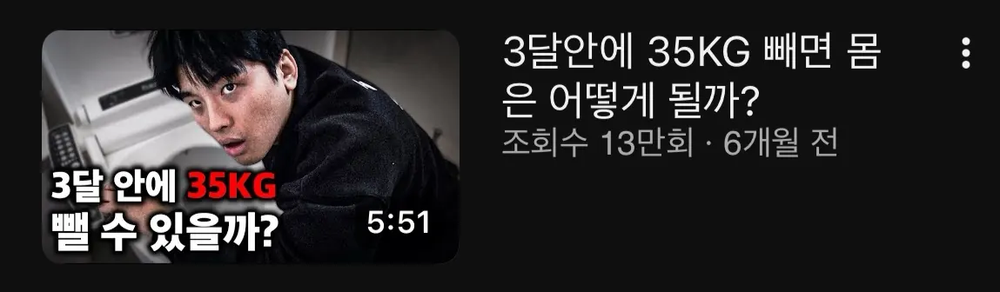
TOOLS & EXECUTION
기획에서 제작·운영·보고까지 직접 완결합니다
도구명보다 실제로 어떤 결과물에 사용했는지를 함께 표시합니다.